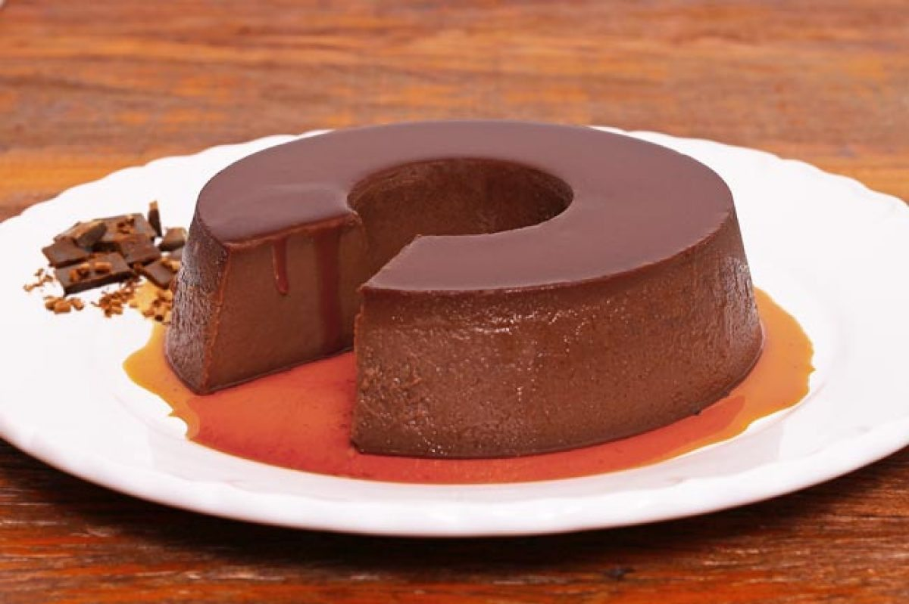

Receitas de Doces

Pudim de Chocolate
Ingredientes:
- 1 Copo de leite
- 1 Lata de leite condensado
- 4 Ovos
- 8 Colheres de chocolate em pó
- Chocolate granulado para cobertura
Para a calda
- 3 Colheres de açucar
- 2 Colheres de chocolate
Modo de preparo:
- Bata todos os ingrediente no liquidificador até ficar homogêneo.
- Faça uma calda com o açúcar e o chocolate e caramelize uma forma de pudim.
- Despeje o conteúdo do liquidificador na forma e cozinhe em banho - maria por quarenta minutos.
- Depois de frio, retire da forma e polvilhe chocolate granulado.

Mousse de Maracujá
Ingredientes:
- 1 lata de leite condensado
- 1 lata de suco de maracujá (medida pela lata de leite condensado)
- 1 lata de creme de leite sem soro
Modo de preparo:
- Em um liquidificador, bata o creme de leite, o leite condensado e o suco concentrado de maracujá.
- Em uma tigela, despeje a mistura e leve à geladeira por, no mínimo, 4 horas.
Brigadeiro
Ingredientes:
- 1 Lata de Leite MOÇA
- 100g de Cobertura Nestle® Dois Frades Meio Amargo
- Meia lata de NESTLÉ® Creme de Leite Extra Cremoso
- 2 Colheres (sopa) de Cacau em Pó 100% NESTLÉ® DOIS FRADES®
- 100g de raspas de Cobertura de Chocolate Meio Amargo NESTLÉ® DOIS FRADES®
Modo de preparo:
- Em uma panela, coloque o Leite MOÇA, o tablete de NESTLÉ Classic Meio Amargo , o NESTLÉ Creme de Leite Extra Cremoso e o Cacau em Pó NESTLÉ DOIS FRADES e misture bem. Cozinhe por cerca de 10 minutos.
- Espere esfriar, enrole e passe pelas raspas de Cobertura de Chocolate Meio Amargo NESTLÉ DOIS FRADES.
Receitas de Salgados
Coxinha Prática
Ingredientes:
- 1 Xícara (chá) de água
- 2 Tabletes de caldo de bacon ou costela
- 1 Colher (sopa) de manteiga
- Margarina para untar a forma
- 2 Xícaras (chá) de leite
- 1/2 Xícara (chá) de batata cozida e amassada
- 2 e 1/2 xícaras (chá) de farinha de trigo
Para empanar
- Farinha de rosca
- Óleo para fritar
- 1 e 1/2 kg de frango
- 2 Colheres (sopa) de azeite
- 2 Dentes de alho
- 2 Ovos batidos
- Recheio:
- 3 Colheres (sopa) de requeijão cremoso
- 1 Cebola pequena
- Tempero a gosto
Modo de preparo: Recheio
- Em uma panela, coloque o azeite, o alho picado e a cebola.
- Espere fritar e adicione o frango desfiado e os temperos de sua preferência.
- Refogue tudo por 5 minutos, retire do fogo, acrescente o requeijão, misture e reserve.
Massa
- Em uma panela grande, adicione a água, o leite, o tablete de caldo, a batata, a manteiga e deixe ferver. Acrescente a farinha de trigo de uma só vez, mexendo até soltar do fundo da panela.
- Despeje a massa sobre uma superfície lisa e untada, sove bem e deixe esfriar.
- Abra a massa com as mãos, recheie e modele em forma de coxinha.
- Passe a massa modelada pelo ovo batido e pela farinha de rosca.
- Frite em óleo quente até dourar e escorra sobre papel absorvente.
Salgado Diplomata
Ingredientes:
- 2 Unidades de Ovos
- 2 Xícaras de Leite (480 mililitros)
- 100ml de Óleo
- 1 Unidade de Fermento biológico seco
- 5 Colheres de sopa de Açúcar
- 1 Colher de sopa de Sal
- 1kg de Farinha de trigo
- 400g de Queijo Muçarela
- 200g de Bacon em cubinhos
- 2 Colheres de sopa de Manteiga derretida
- 6 Fatias de Presunto
- 1 Punhado de Orégano
Para a calda
- 3 Colheres de açucar
- 2 Colheres de chocolate
Modo de preparo:
- Em um recipiente, coloque os ovos, leite, açúcar, óleo, fermento e misture bem. Esse prato também é conhecido como torta diplomata em outros lugares do Brasiil, então fique de olho caso escute por aí.
- Aos poucos, acrescente a farinha de trigo e quando começar a ficar mais consistente, coloque as mãos para sovar.
- Polvilhe um pouco de farinha na bancada e sove a massa por 10 minutos. Coloque farinha até que ela não grude mais e esteja macia.
- Deixe a massa crescer por uma hora.
- Separa a massa em duas partes e abra, fazendo o formato semelhante a um retângulo.
- Coloque o queijo ralado no centro, junto com a fatia de presunto e o bacon.
- Puxe uma lateral cobrindo o recheio. Puxe a outra e cubra a massa, para fechar e não vazar.
- Corte pedaços com pelo menos 5cm e disponha na assadeira, untada com margarina.
- Pincele manteiga derretida sobre a massa e finalize com orégano. Leve ao forno, à 220 graus, por 25 minutos.
- Retire e desfrute de um delicioso salgado caseiro! Bom apetite! Se você ficou com vontade de preparar mais delícias típicas de padaria.

Hambúrguer de Forno
Ingredientes:
- Esponja:
- 1 xícara (chá) de farinha de trigo
- 1 colher (sopa) de açúcar
- 1 xícara (chá) de leite morno
- 1 tablete (15g) de fermento biológico
- Massa:
- 3 xícaras (chá) de trigo
- 1 ovo
- 1 colher (chá) de sal
- 1/2 xícara (chá) de margarina em temperatura ambiente
- 1/2 xícara (chá) de leite
- Recheio:
- 8 unidades de carne de Hambúrguer Frisa
- 150g de muçarela
- 150g de presunto
Modo de preparo:
- Misture o fermento com o açúcar até que fique líquido. Junte o leite e a farinha. Deixe descansar por 20 minutos.
- A parte misture os ingredientes secos da massa, abra um buraco e coloque a fermentação e os ingredientes líquidos.
- Misture tudo, leve à mesa e sove mais um pouco até que fique uma massa bem lisa.
- Polvilhe a mesa com farinha de trigo e estique a massa com um rolo.
- Corte do tamanho desejado e recheie com Hambúrguer cru, tomate, muçarela e presunto.
- Cubra a massa com a outra parte, aperte bem e deixe descansar por uns 15 minutos. Pincele gema e leve ao forno preaquecido a 180ºC até dourar bem.